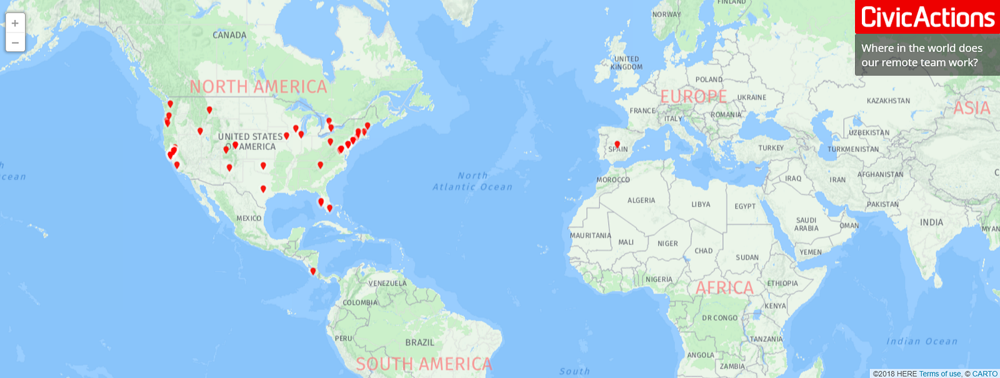
CivicActions was founded as a distributed company in 2004, before remote working was cool. Now the company’s engineers, project managers, designers, and strategists work from all over the continental U.S. and beyond.
With a culture of transparency and an enthusiasm for online collaboration tools (as well as the occasional apropos cat meme), CivicActions excels at working and playing together from afar. In this article, the team shares tips and tricks on working from home, how they maintain close connections with colleagues, and why remote life helps them stay productive and happy.
Why is CivicActions a distributed company, and how has the remote model changed or improved?
Aaron, Co-Founder and Chief Experience Officer: When the company was born, we were working out of our home offices in the Bay Area and staying in touch through daily conference calls. Even back then, before Scrum was a thing, we saw the value of regular check-ins for accountability and productivity. We realized we could have deep insight into each other’s work, even from a distance.
As we began to hire our first developers, we realized we had a strategic choice to make. We could pay for an office space and try to attract talent from the extremely competitive local dev community — or we could keep the remote structure, avoid daily commutes, and choose from a much larger talent pool. We chose to build a highly qualified remote team with a strong focus on connection and togetherness.
“We realized we could have deep insight into each other’s work, even from a distance.”
We developed all sorts of hacks for working as an effective distributed team before the advent of the modern collaboration tools available today. We set up email lists for client projects and internal teams, then built folder systems to help us compartmentalize all the different things we worked on. It was basically like an MVP of Google Groups or Slack.
But most of all, we perfected the art of intentional collaboration. The remote context forced us to remain uber-conscious of our processes. We proved to our clients — and ourselves — that we could be a truly effective team motivated by transparency and trust.
“We perfected the art of intentional collaboration.”
More than a decade later, the narrative has shifted. Remote companies have become more common. We have access to all kinds of platforms that have supercharged our already-strong collaboration skills. We love the increased velocity we get from Slack, Zoom, Google, Trello, and other tools, but we know it’s our culture and commitment to transparency — really, our people — that power CivicActions’ success.
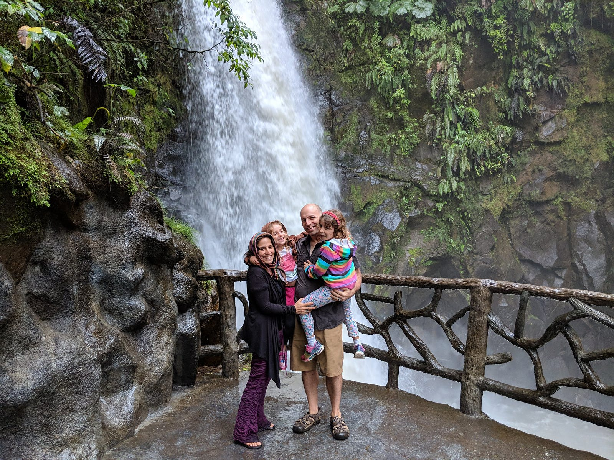
What does remote work allow you to do, that you couldn’t do otherwise?
Melinda, Content Strategist: My partner and I, along with our three kids, are remodeling an Airstream motorhome. We’re making it our own traveling adventure-bus and primary residence. My remote job with CivicActions makes it possible for me to grow professionally, serve as primary caregiver to the kids, AND travel around the country without missing a beat. It’s not always easy, but it’s phenomenal to have the peace of mind that comes with a secure career, while still pursuing radical dreams.
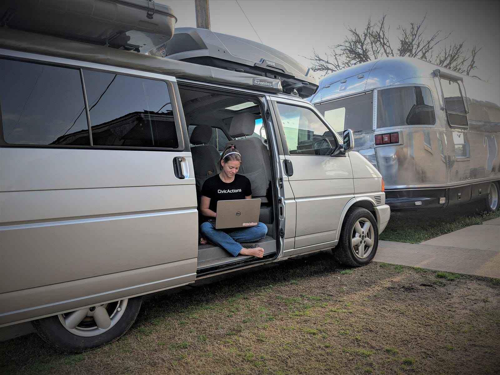
Steve, Project Manager: The flexibility of remote working gets put to all sorts of uses at CivicActions — many of us pursue work as artists, dancers, or musicians in ways that vary from hobby to full-fledged second career. I spent much of my 20s and 30s in a touring band. When I hung that up, I looked for a job that would engage me in meaningful work while allowing room in my life to continue making music in a concentrated way. Outside of the flexibility of a place like CivicActions, I don’t think this would be possible, and I’m incredibly grateful for it.
“It’s phenomenal to have the peace of mind that comes with a secure career, while still pursuing radical dreams.”
Ero, Help Desk Support Manager: Remote work allows me to do small chores around the house between meetings and have dinner ready when my wife gets home. I also get to spend all day with my cat, who sometimes prefers dozing on my lap and sometimes sleeping on top of my feet. On sunny days, I can work on the porch or in the backyard (though I haven’t yet solved the glare-on-the-laptop-screen problem). CivicActions doesn’t encourage weekend work, but if needed I can do that too, with minimal disruption to my work/life balance.
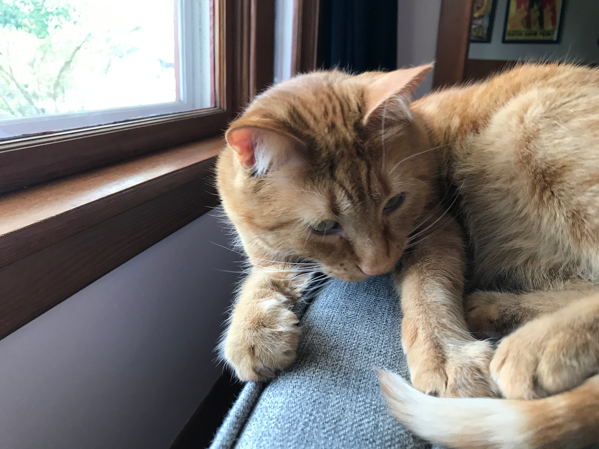
How does remote work compare to your past experience with commuting?
Bill, VP Public Sector: Working from home has been transformational. I used to spend two hours a day stuck in traffic and I worked long hours. I couldn’t help with family chores or activities, so my working wife was on duty for all pick-ups, drop-offs, and play dates for our four kids. Now that the commute is off my plate, I do all of the cooking and we have family dinners at least four times a week. This gives me daily insight into what is really happening within my family, and it’s made a huge difference. It’s amazing what you can uncover in 45 minutes at dinner.
“Working from home has been transformational.”
Marc, Security and Compliance Engineer: My previous morning commute involved either an hour-long drive, a two-hour train ride, or a 20-minute subway ride. Not commuting is almost unnerving since I don’t spend 25–30 hours a week in cars and trains and subways. I tend to read more books now instead of mindless news, since I can’t forget the book I am reading at home anymore. I also don’t listen to as many podcasts — which actually is kind of sad.
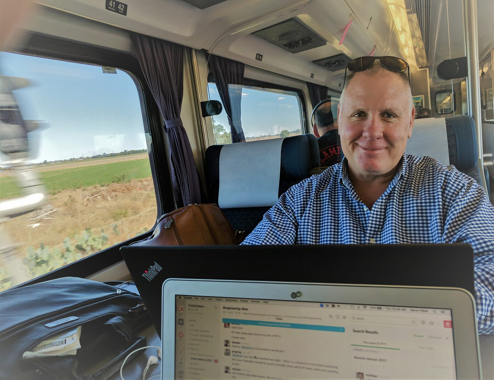
What are some challenges to remote working?
Karen, Systems Administrator: One of my challenges is sharing the home working space with my partner, who also works remotely. We have our desks in a big “U” shape. We both have one side of the U and we share the middle part. Sometimes we have to juggle around when work calls overlap. It can be tricky, but I wouldn’t change it, because I love spending time with him throughout the day.
Steve, Project Manager: Since there are no set work hours or fixed limits to my workday, it’s sometimes hard to go completely offline at 5:00pm ET when I might be needed by colleagues who are still working on the Pacific coast. I really don’t want my kids to see me checking Slack on my phone all evening — I’d rather model a more screen-free domestic landscape. But this is small peanuts in comparison to a life where I don’t see my kids at all until the end of the day!
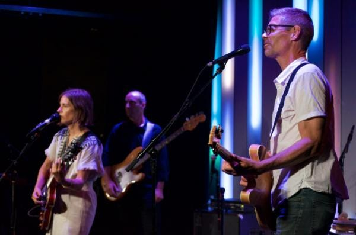
How does remote working help you be more effective for clients?
Elizabeth, Director of Professional Services: I appreciate the ability to stay laser-focused when I need to, without the typical interruptions of an office environment. I can also split focus effectively when needed — for example, I can respond immediately in Slack to a question from a client while also participating in a video call with my team.
“Our daily agile Scrum meetings … give clients insight into the people we are, helping them relate to us as humans rather than just contractors.”
Steve W, Engineer: Our distributed model means we can connect with clients more easily than if we were confined to an office location. Our daily agile Scrum meetings — which we attend remotely from anywhere — give clients insight into the people we are, helping them relate to us as humans rather than just contractors. This builds upon our ‘open’ ethos and creates a level of trust that makes our teams more effective at delivering what the client needs.
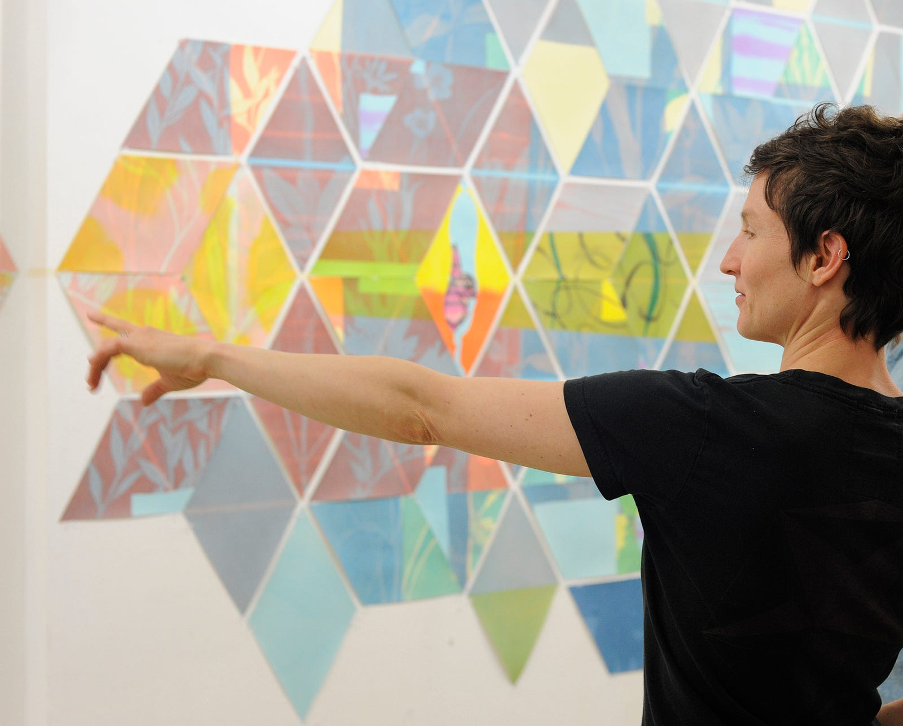
What is it like to work from home with kids?
Susie, Project Manager: Kids can be distracting during the workday, but I’ve found that with patience and practice everyone can co-exist. Sometimes it’s worth it to take a minute and listen to their conversations or arguments when they don’t know they are being overheard — because kids can be the best teachers in life if you pay attention.
“I have very young children, and CivicActions has been so wonderful in providing flexibility.”
Iris, Engineer: I have very young children, and CivicActions has been so wonderful in providing flexibility. I’ve learned the tricks of working at home with little ones. I keep a “treasure box” full of small, interesting stuff in my office — guaranteed to divert and occupy a persistent toddler for at least a few minutes while I finish up a work call!
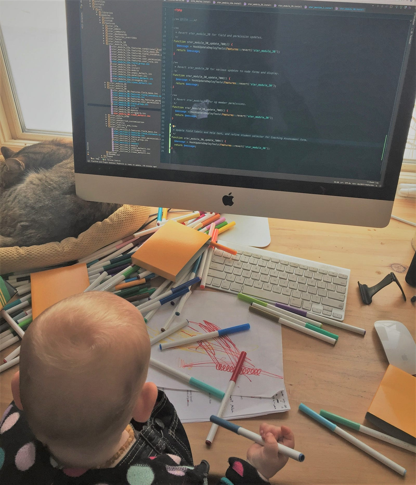
What are some elements of your work-from-home routine that help you maintain focus and balance?
Fen, Chief Information Security Officer: I start with getting my son off to school at 7:30, then a half hour of exercise. If I feel like getting up and doing something physical during the work day, I have a list of projects around the house that never runs dry. Having such a list is essential to work-at-home sanity for me. Oh, and each of my cats will ask for attention twice a day, which gives me four other (usually) welcome breaks.
“A five-minute yoga video away from my desk can completely reset my frame of mind.”
Elizabeth, Director of Professional Services: I have to be consistent with yoga and meditation every single day. I’ve figured out ways to squeeze it in, even when I have a full schedule, because it can make all the difference in my outlook and productivity. In a pinch, just a five-minute yoga video away from my desk can completely reset my frame of mind. Sometimes I go outside and chase the dog around in the backyard — watching him run is one of my favorite things. And finally, I’ve learned to turn off Slack or use the “Do Not Disturb” setting if I need to create space for uninterrupted focus.
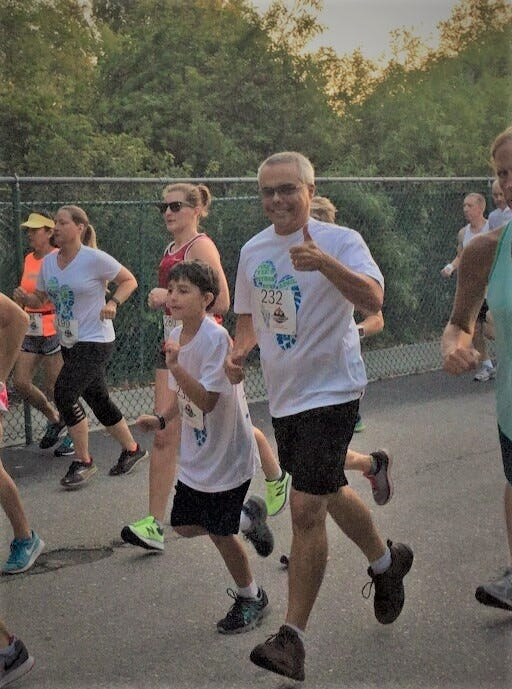
How do you stay connected and engaged with colleagues?
Jason, Project Manager: Slack is very helpful on a number of different levels. The #general channel makes me feel connected to the whole organization. But it’s project-level Slack communications (and daily scrum calls via Google Hangouts) that create a sense of ‘teaminess’ with others. The shared victories and pains of a project bring people closer, and that closeness contributes a great deal to my overall feelings of success and fulfillment as a remote employee.
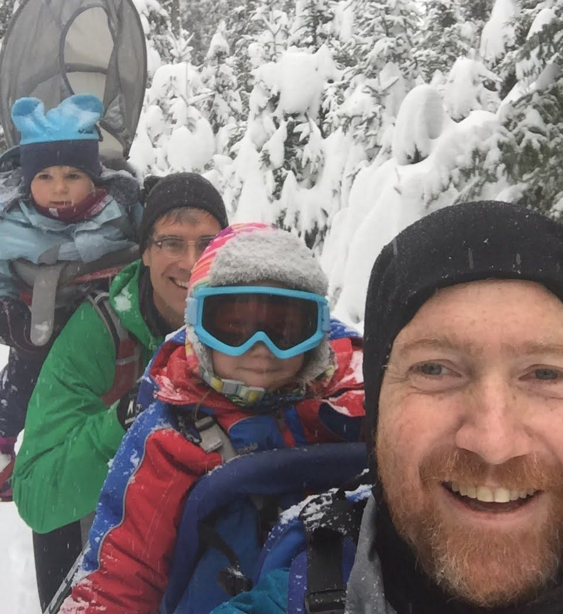
Melinda, Content Specialist: Our annual company retreat is invaluable for building rapport with each other that lasts throughout the year. We brainstorm, co-work, make music, explore new cities, eat great food, establish new processes, laugh a lot, and always leave with a strong sense that we are part of something extremely special.
“Post GIFs! Post emojis! Post pets! Let’s humanize the experience of working remotely.”
Stefanie, Engineer: One thing that makes a major difference for me when communicating with remote colleagues is keeping a sense of humor about it. When you interact primarily through webcam and Slack, you can miss nuances in tone or body language — which can lead to misunderstandings or awkwardness. Same goes for technical glitches that cause video crashes or robotic voices during meetings. To overcome this, why not lighten up the mood a bit? Post GIFs! Post emojis! Post pets! Let’s humanize the experience of working remotely, which brings us together and improves our day as individuals and as a collective team.
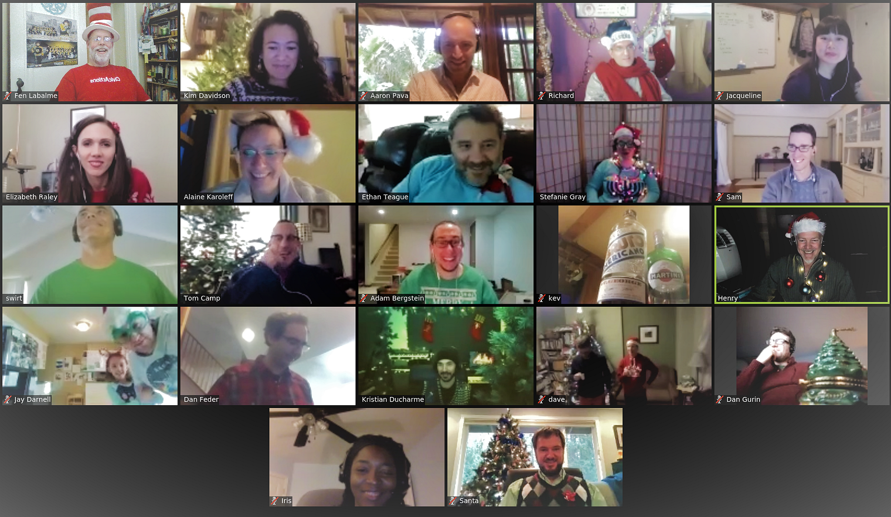
What’s fun, quirky, or brilliant regarding your home office set-up?
Ethan, Engineer: I work from my couch! I used to have a “traditional” office at home with a desk and chair, and a big old computer with three monitors. Then I started having back spasms. I decided that working exclusively from my laptop would force me to move throughout the course of my work day, and this has proven true. Another cool side effect of committing to my laptop is that I’ve learned to write more efficient code — longer functions are harder to read on a small screen!
“By committing to my laptop, I’ve learned to write more efficient code — longer functions are harder to read on a small screen!”
Jacqueline, Visual and UX Designer: I have a lot of creative friends and am currently hanging up their work in my office. That way, I’m surrounded by inspiration and reminded of how much talent there is in my life.
Marc, Security and Compliance Engineer: I leave a pretty big patch of my desk open, right in front of my dual monitors, so one (or two) cats can take a nap. This was mostly the cats’ decision, but it was my idea to raise my monitors up about five inches with books so I can see the bottom of the screen without having to wake the cats up to ask them to move.
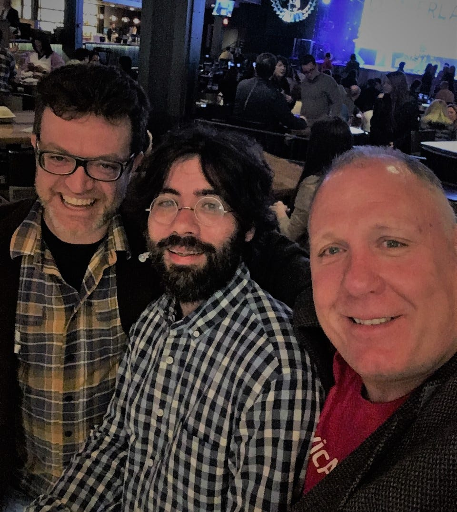
Want to join the CivicActions team in working remotely and building the future of digital government services? Check out open positions here.